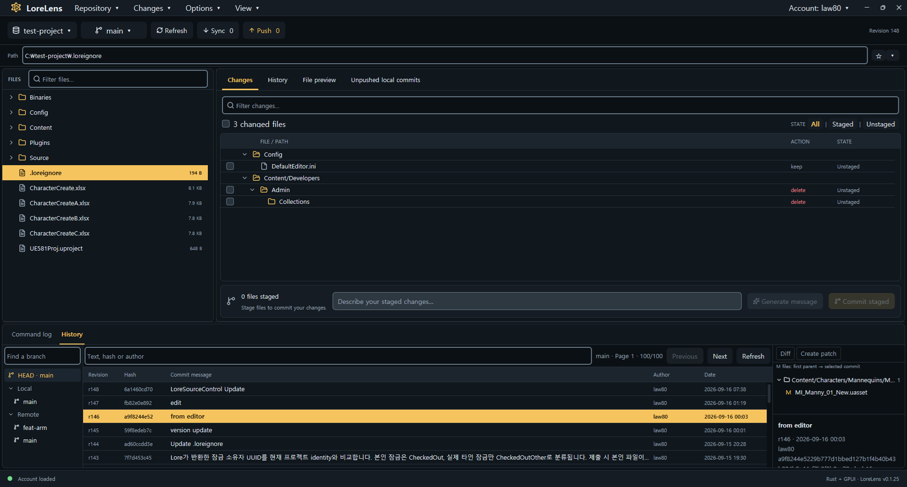

Start with your files
Browse files and folders, and select multiple items. Right-click to stage, discard, lock, or move files.
EXPLORE & ORGANIZESee every change. Know your next step. Manage your Lore files, commits, and branches in a high-performance desktop app built with Rust and GPUI.

Browse files, inspect unified diffs, and bring branches together in a responsive native interface.
Browse files and folders, and select multiple items. Right-click to stage, discard, lock, or move files.
EXPLORE & ORGANIZEInspect your changes in a diff and stage only the files you need. Commit locally, then push when you are ready.
REVIEW & COMMITFind local and remote branches in the current branch menu. Create branches, switch between them, and merge locally.
BRANCH & MERGEEngineered with Rust 2024 and GPUI for instant startup, buttery 120 FPS rendering, and minimal memory footprint.
PERFORMANCEYour repository code stays strictly on your machine. Discard, revert, and delete operations feature guarded confirmation.
SAFETY & PRIVACYSeamless background integration with Lore CLI using structured status diagnostics, branch inspection, and robust sync.
CLI INTEGRATIONKeep track of local commits waiting to be pushed. Review sync and push results in the details panel.
Open your first workspace arrow_forwardOpen or clone a repository, then sign in with your Lore account.
Review your changes, stage your files, and create a local commit.
Sync remote changes and push your commits when they are ready.
Download a package for your platform, or build from source.
Download the MSI, close LoreLens if it is open, then run the installer. It installs LoreLens and the bundled Lore CLI, and upgrades an existing installation.
Download latest MSI arrow_forwardWhen a DMG is available on the release page, open it and drag LoreLens to Applications. On first launch, approve it in System Settings if macOS blocks the app.
Check latest release arrow_forwardmacOS DMG packages are not published yet. The release page is the source for signed platform installers.
cargo build --release
./target/release/lorelens.exe C:/path/to/repositoryChoose your Lore executable using Locate CLI… in the app.
Sign in through Lore Login, then select Refresh to load the repository status.
Open View → Theme… to follow your system appearance or choose a built-in light or dark theme.